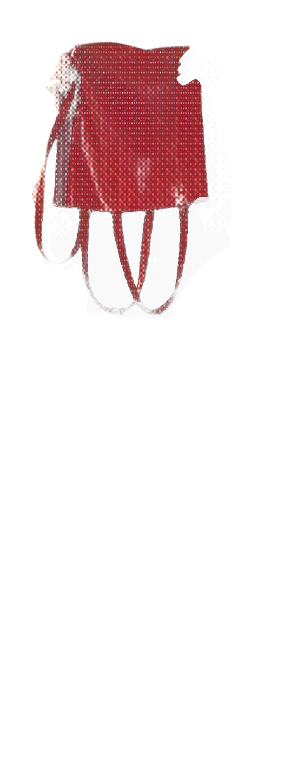
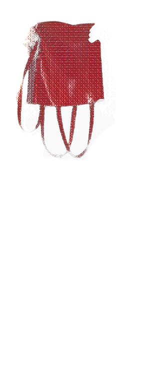

Hello, my name is Mathéo Delessert
Welcome to my portfolio, all
my work is in my bag!
This project is one of my favorite, i had so much fun designing it and manufacturing it.
some facts about me!
facts #1
So i my name is Mathéo Delessert as you know it's written in the homepage lol. I'm actually im swiss and portugese and i was born in Vevey adn now i live in Lausannne, i'm currently learning interacrive media design at ERACOM.
fact #2
since i was child i was absorbed and fasinated by visual in commercials, emissions or cartoons, so thats jind of where this passion for moving pixel got me. I really like motion design webdesign and webdev and programmtion